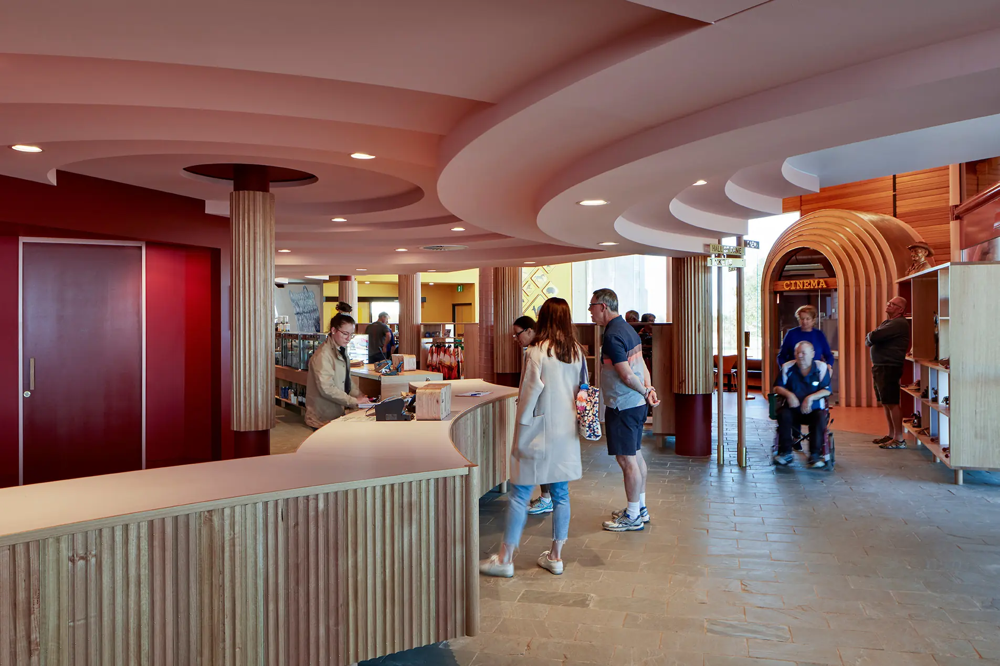
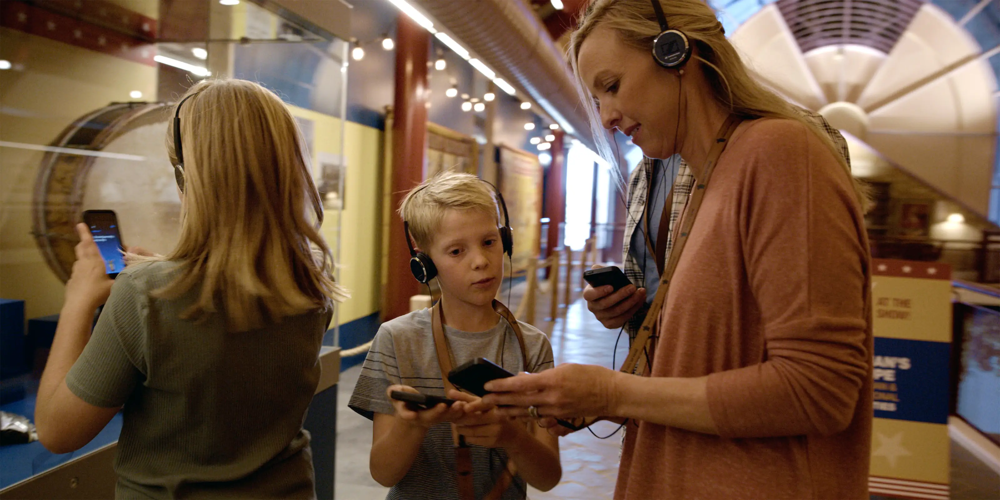
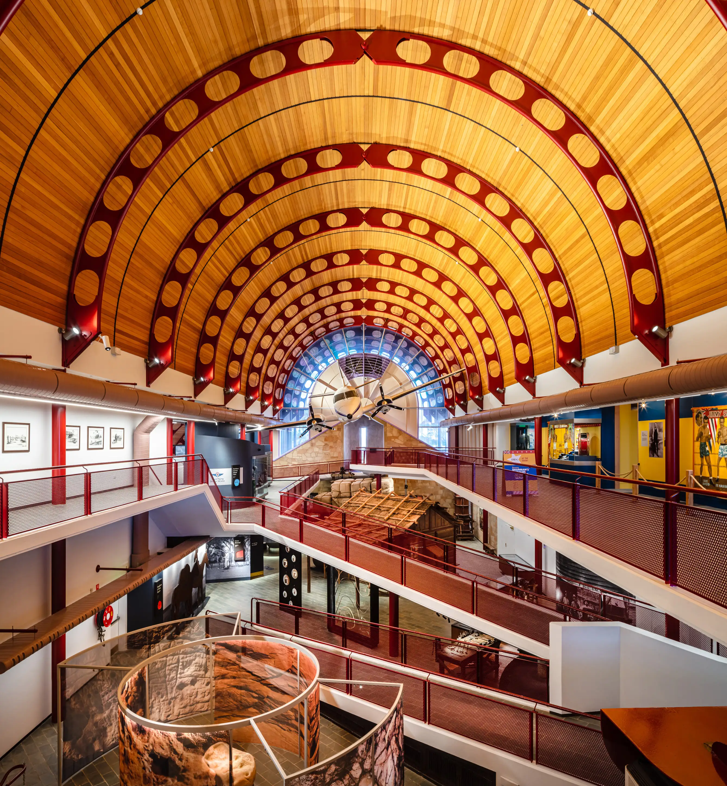
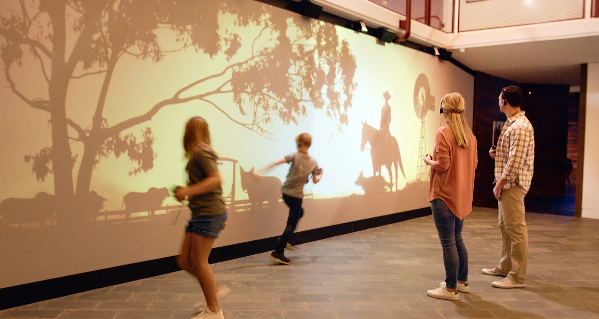

Stockman's Hall of Fame
Longreach, Australia
The Australian Stockman’s Hall of Fame tells the story of the people who shaped life in the Australian outback. The redevelopment transformed a largely static exhibition into a more immersive and participatory experience built around first-hand accounts and lived experience.
I led the visitor experience design for the project and developed the interpretive strategy for a custom location-aware audio experience. It allowed visitors to explore at their own pace while hearing stories from people connected to the land, the industries and the communities that sustain remote Australia.

The journey begins with an orientation theatre before visitors move into the exhibition with an audio experience that responds to where they are in the gallery. As they move through the space, voices, objects and environments work together to build a richer and more personal understanding of outback life.

The experience broadened the story beyond a pastoral history to include a wider set of people, roles and perspectives from the area. It drew on the institution’s collection and legacy while opening space for a more layered account of the outback and the lives shaped by it.

Interactive moments were woven through the exhibition to balance listening with exploration and play. These included a large responsive welcome wall and opportunities for visitors to discover the stories of Hall of Fame inductees in more personal and engaging ways.

The redevelopment gave the Hall of Fame a renewed platform to share the story of the Australian outback. By placing people and their voices at the centre of the experience, it expanded the narrative while giving a small regional institution a more vivid and accessible way to welcome visitors.